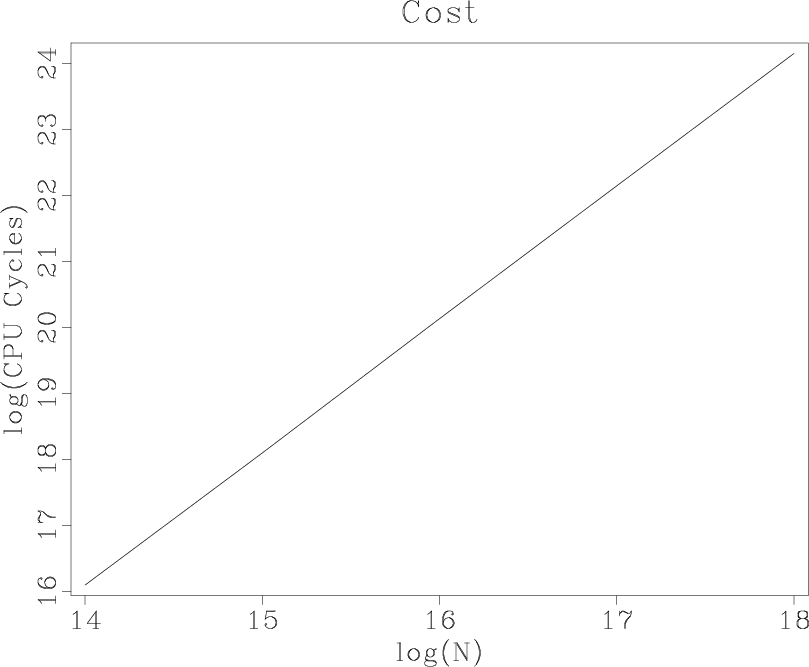
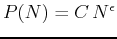
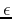

|
|
|
|
Homework 2 |
scons movie.vpland observe a movie illustrating a slow sorting algorithm. The algorithm is implemented in the slow_sort function in the file sorting.c.
scons viewto compute the cost of slow sorting experimentally. The output is shown in Figure 1.
|
cost
Figure 1. Experimental cost of slow sorting. The logarithm of the cost is shown against the logarithm of the data size. |  |
|---|---|
|
|
If we approximate the cost as , what is the experimental value of  observed in the picture?
scons movie.vplto observe a change in the sorting movie. Debug your changes to the program if necessary.
scons viewto observe the change in the algorithm cost. What is the new experimental value of ?
#include <time.h>
#include <rsf.h>
static int na, nmovie=0;
static float *arr;
static sf_file movie;
static void write_movie(void)
{
if (NULL != movie)
sf_floatwrite(arr,na,movie);
nmovie++;
}
static void slow_sort(int n, float* list)
{
int k, k2;
float item1, item2;
for (k=0; k < n; k++) {
write_movie();
item1 = list[k];
/* assume everything up to k is sorted */
for (k2=k; k2 > 0; k2-) {
item2 = list[k2-1];
if (item1 >= item2) break;
list[k2] = item2;
}
list[k2] = item1;
}
}
static void quick_sort(int n, float* list)
{
int l, r;
float ll, pivot;
if (n <= 1) return;
write_movie();
l = 1; /* left side */
r = n; /* right side */
pivot = list[0];
/* separate into two lists:
the left list for values <= pivot
and the right list for > pivot */
while (l < r) {
ll = list[l];
if (ll <= pivot) {
l++;
} else {
r-;
list[l] = list[r];
list[r] = ll;
}
}
list[0] = list[l-1];
list[l-1] = pivot;
quick_sort(l-1,list);
/* !!! UNCOMMENT AND EDIT THE NEXT LINE !!! */
/* quick_sort(?,?); */
}
int main(int argc, char* argv[])
{
char* type;
clock_t start, end;
float cycles;
sf_file in, cost;
/* initialize */
sf_init(argc,argv);
/* input file */
in = sf_input("in");
if (SF_FLOAT != sf_gettype(in))
sf_error("Need float input");
na = sf_filesize(in); /* data size */
/* cost file */
cost = sf_output("out");
sf_putint(cost,"n1",1);
/* movie file */
if (NULL != sf_getstring("movie")) {
movie = sf_output("movie");
sf_putint(movie,"n2",1);
sf_putint(movie,"n3",na+1);
} else {
movie = NULL;
}
if (NULL == (type = sf_getstring("type")))
type = "quick"; /* sort type */
/* get data */
arr = sf_floatalloc(na);
sf_floatread(arr,na,in);
/* sort */
start = clock();
if ('q'==type[0]) {
quick_sort(na, arr);
} else {
slow_sort(na, arr);
}
end = clock();
/* CPU cycles */
cycles = end - start;
sf_floatwrite(&cycles,1,cost);
while (nmovie < na+1) write_movie();
exit(0);
}
|
from rsf.proj import *
# Generate random data
######################
Flow('rand',None,
'spike n1=524288 | noise rep=y type=n seed=2012')
prog = Program('sorting.c')
sort = 'slow'
# !!! UNCOMMENT THE NEXT LINE !!!
# sort = 'quick'
# Sorting movie
###############
Flow('movie','rand %s' % prog[0],
'''
window n1=200 |
./${SOURCES[1]} movie=$TARGET type=%s
''' % sort,stdout=0)
Plot('movie',
'''
graph symbol=o title="%s Sort" wantaxis=n symbolsz=5
''' % sort.capitalize(),view=1)
# Sorting cost
##############
na = 8192
costs = []
for n in range(5):
na *= 2
cost = 'cost%d' % n
Flow(cost,'rand %s' % prog[0],
'''
window n1=%d |
./${SOURCES[1]} type=%s
''' % (na,sort))
costs.append(cost)
Flow('cost',costs,
'cat axis=1 ${SOURCES[1:5]} | put o1=14 d1=1 unit1=')
Result('cost',
'''
math output="log(input)/log(2)" |
graph title=Cost
label1="log(N)" label2="log(CPU Cycles)"
''')
End()
|
|
|
|
|
Homework 2 |
{kind=link}